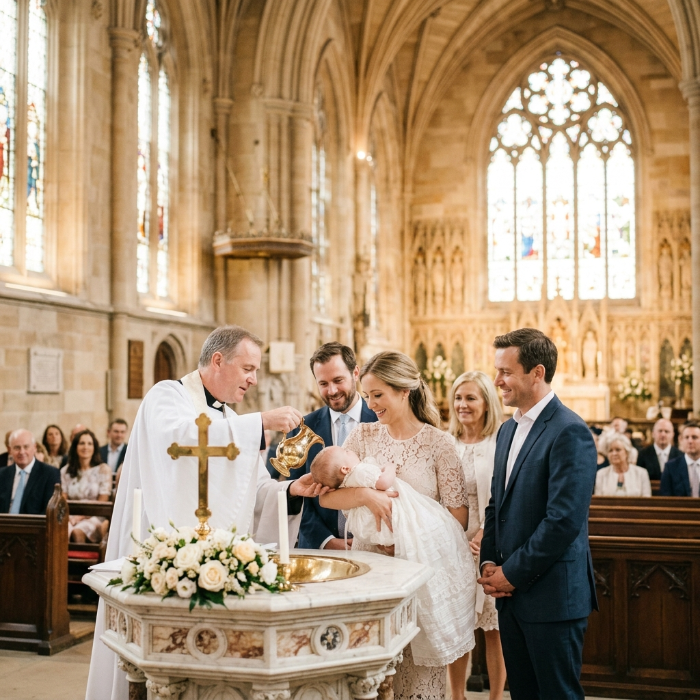

August 24, 2026
Notre-Dame de Paris
"In the quiet reverence of the cathedral, a new chapter began with a gentle splash of water and a whisper of prayer. 'Pure Grace' documents the baptism of little Sofia, a day filled with light, family, and timeless traditions.
Capturing the soft light filtering through stained glass and the tender embrace of godparents, we aimed to preserve the purity of this sacred milestone. Every photograph is a testament to the love and faith that surrounded Sofia on her special day."
